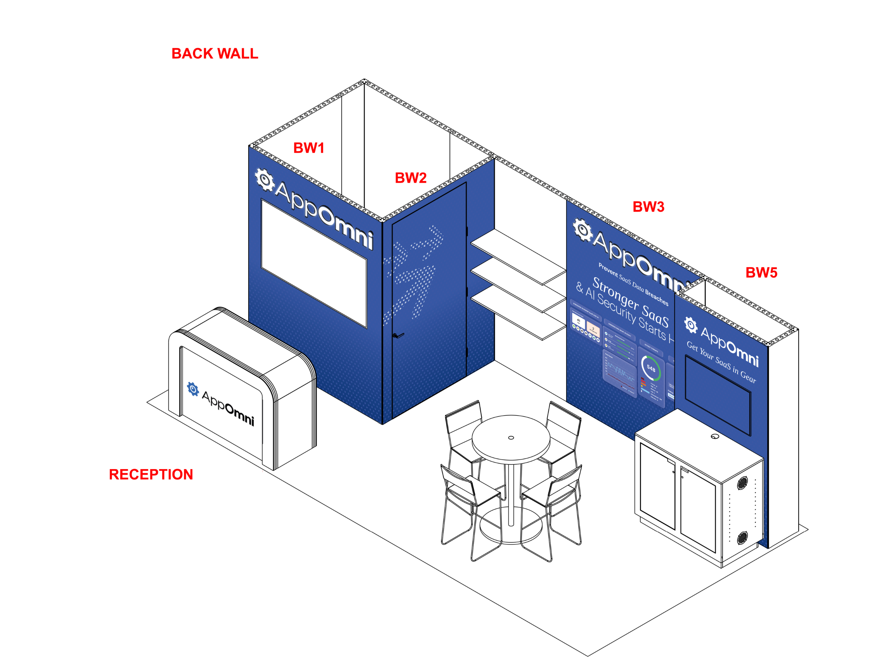
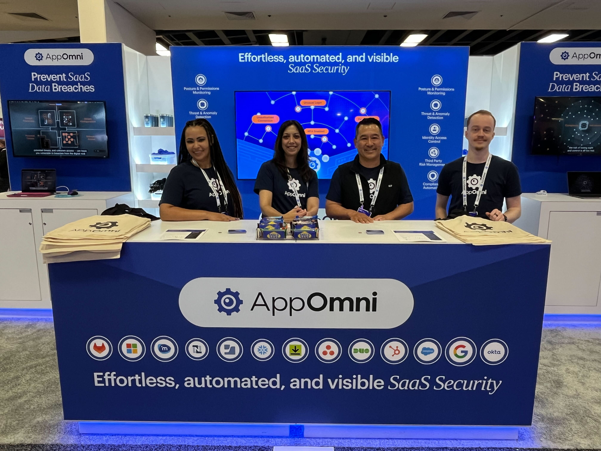

Security Design That Earns Trust
AppOmni sits at the intersection of SaaS security and enterprise compliance — a space where design has to do heavy lifting. Buyers are sophisticated CISOs and security architects who can spot fluff instantly. The brand had to communicate depth, intelligence, and precision before a single word was read.
Brought on as Senior Visual Designer, I've been driving the visual strategy across brand systems, product marketing, event presence, and digital campaigns — creating a cohesive design language that makes AppOmni feel as sophisticated as the platform it's selling.



One System, Every Surface
Enterprise security brands often default to cold, technical aesthetics — dark blues, circuit-board textures, padlock iconography. AppOmni needed something sharper: a visual language that felt authoritative without being sterile, and dynamic without sacrificing clarity.
I developed a motion-forward design system built around AppOmni's purple — using generative motion, flowing energy forms, and layered depth to communicate the platform's intelligence. That same visual DNA scaled from 80-foot RSA trade show backdrops down to 1080×1080 LinkedIn ads and in-product UI moments, giving the brand a consistent visual identity across every context where buyers encounter it.